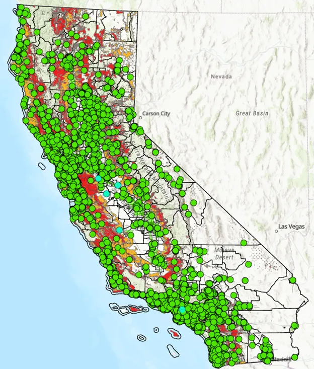
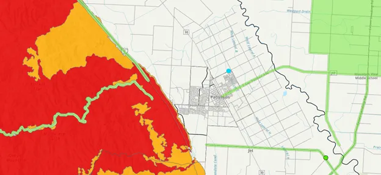
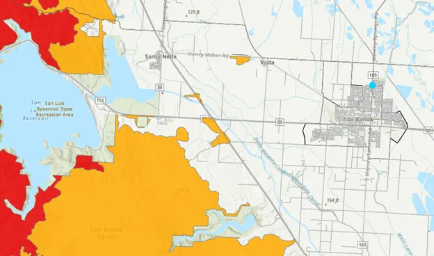
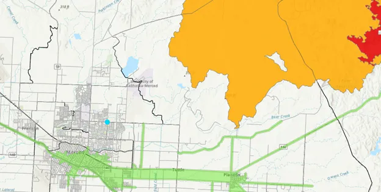
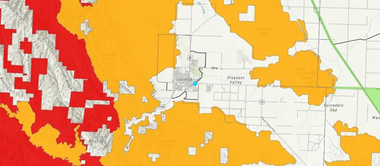

GIS & Spatial Data Analytics Project
This project explored how GIS and spatial analysis can be used to improve wildfire evacuation planning across California. Using ArcGIS Pro, I integrated wildfire hazard zones, population data, transportation networks, and evacuation shelter locations to identify communities that may be unable to reach safety within a 30-minute evacuation threshold.
The analysis then evaluated whether strategically placed evacuation safe zones could help improve accessibility in underserved regions.
California wildfires continue to increase in frequency and severity, creating significant challenges for emergency preparedness and evacuation planning. Many communities face transportation limitations, sparse shelter coverage, and longer travel times that may prevent residents from reaching safety during an emergency — while others have strong coverage due to urban density and road infrastructure.
The goal of this project was to identify vulnerable communities and evaluate how GIS-based planning tools can support evacuation infrastructure decisions.
Research Question — How can the placement of additional evacuation safe zones reduce the number of high wildfire-risk communities unable to evacuate within 30 minutes?
The analysis integrated multiple statewide datasets to build a comprehensive picture of wildfire risk and evacuation accessibility across California.
Using ArcGIS Network Analyst, a transportation network model was built capable of calculating travel-time accessibility across California. Service area analysis identified communities that could and could not reach evacuation shelters within a 30-minute driving threshold.
After identifying accessibility gaps, a scenario analysis was conducted using four hypothetical evacuation safe zones placed near underserved wildfire-risk communities. Locations were selected based on visible accessibility gaps, nearby population centers, transportation access, and proximity to wildfire-prone regions.
San Joaquin Valley — rural gap in shelter coverage near wildfire-adjacent communities
Merced County — limited road connectivity and sparse existing shelter access
Central Valley — population center serving as a regional evacuation hub candidate
Rural corridor — high wildfire exposure with minimal nearby evacuation infrastructure
The baseline analysis identified approximately 5.4 million residents living in wildfire-risk areas lacking access to an evacuation shelter within a 30-minute travel threshold.
Strong urban coverage — Urban areas with dense road networks showed strong evacuation accessibility, confirming that transportation infrastructure is the primary driver of readiness.
Rural and mountainous gaps — Significant accessibility gaps were concentrated in rural and mountainous regions where road connectivity is limited and shelter locations are sparse.
Scenario improvements — The four proposed safe zones produced localized accessibility improvements in their target communities, validating the scenario modeling approach.
Broader planning needed — The analysis demonstrated that statewide evacuation challenges require broader infrastructure and coordinated planning efforts beyond individual safe zone additions.
Cartographic outputs were created to communicate wildfire hazard zones, existing shelter coverage, and the accessibility improvements produced by the proposed safe zones.
Wildfire hazard zones, existing shelter locations, and evacuation accessibility coverage across California.

Legend
Localized accessibility improvements produced by the four hypothetical safe zone placements.
Patterson

Los Banos

Merced

Pleasant Valley

Throughout the project I contributed to the planning, analysis, and visualization of the GIS workflow.
This project demonstrated how GIS can be used as a decision-support tool for emergency management and infrastructure planning — translating raw spatial data into actionable insights.